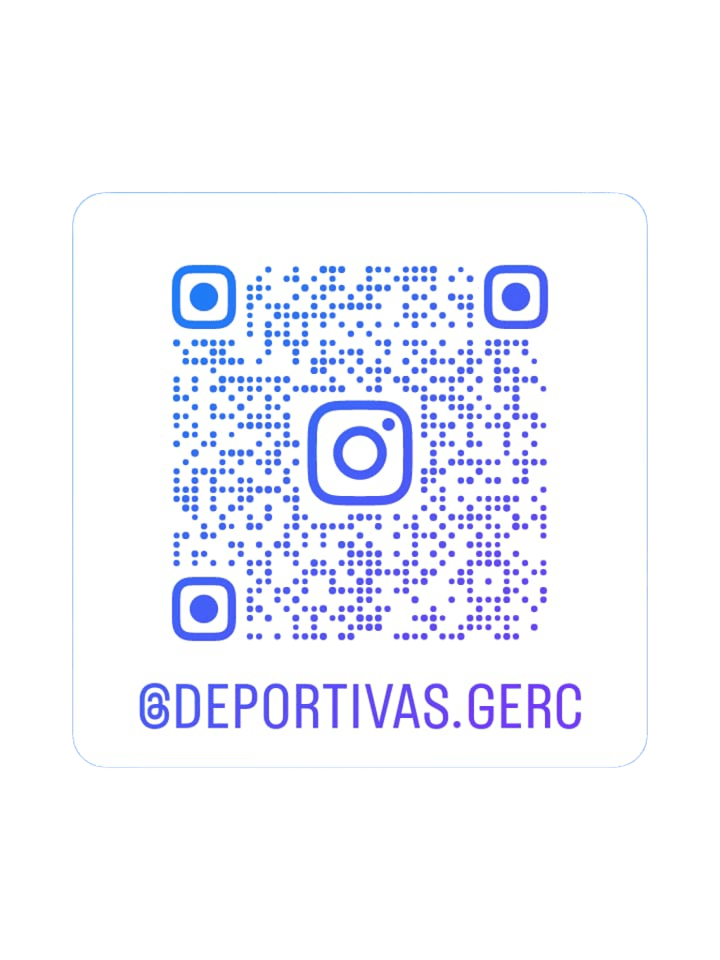

“Calidad que se ve”
Este proyecto se desarrolló para la marca Deportivas Gerc, con el propósito de construir una identidad visual coherente, moderna y representativa. El trabajo incluyó el diseño de su logotipo, tarjetas de presentación, hoja membretada, y piezas para redes sociales, consolidando un sistema visual adaptable a distintas aplicaciones.
Se crearon códigos QR para facilitar el acceso directo a las redes sociales oficiales de la marca Deportivas Gerc, manteniendo la coherencia visual del sistema gráfico.
Escanea el código para visitar las redes sociales.